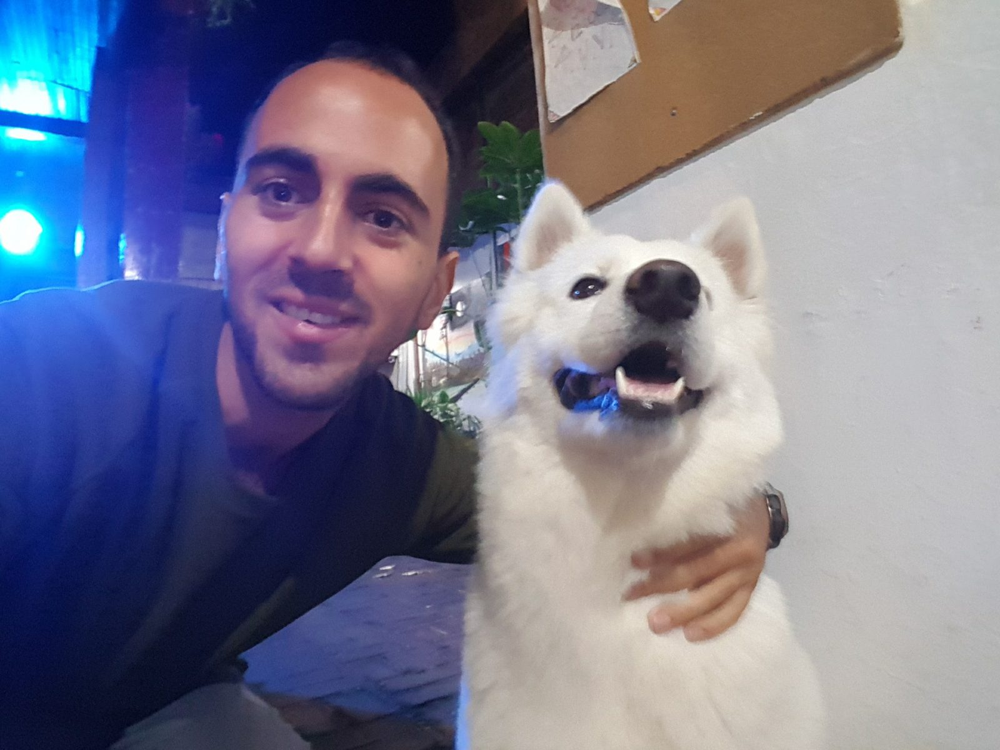
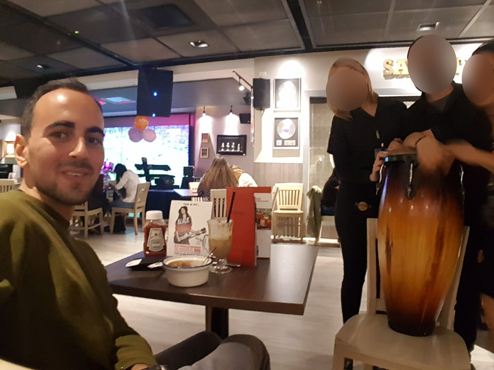
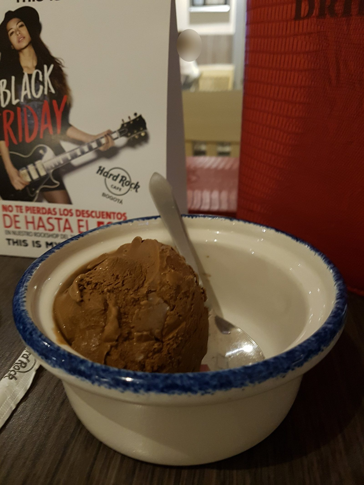
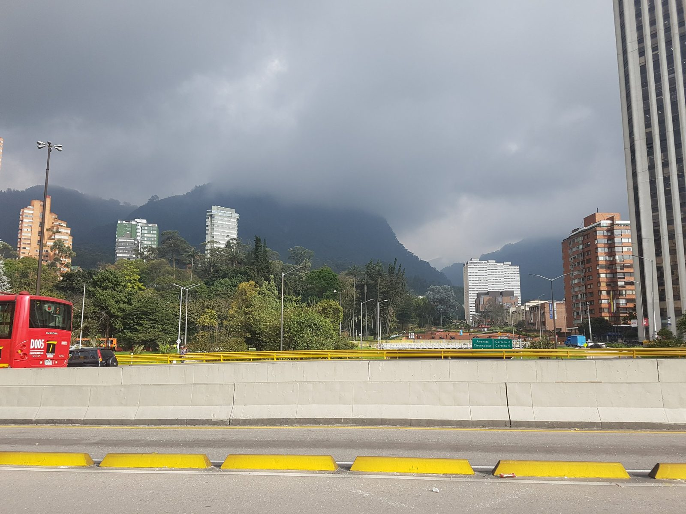
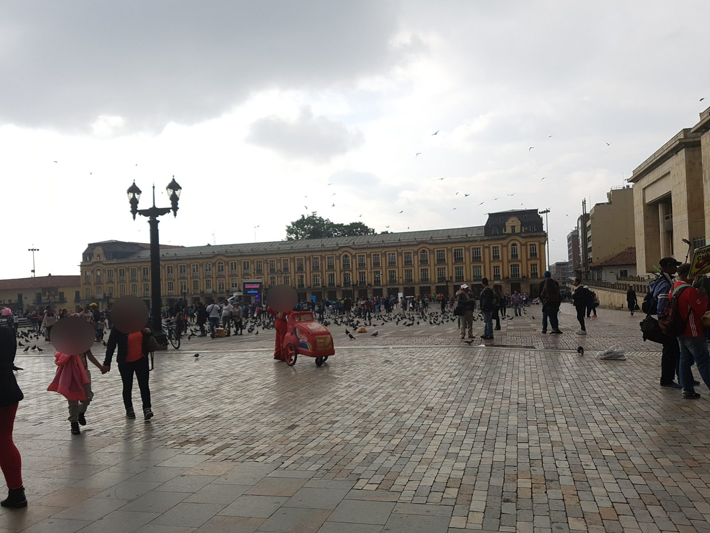
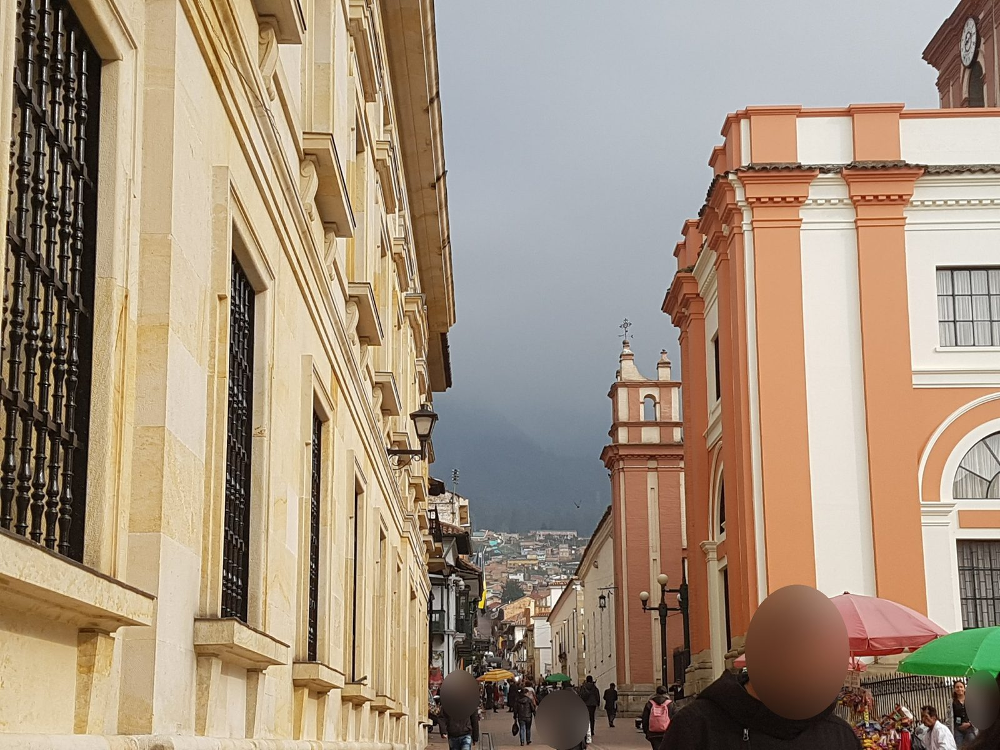
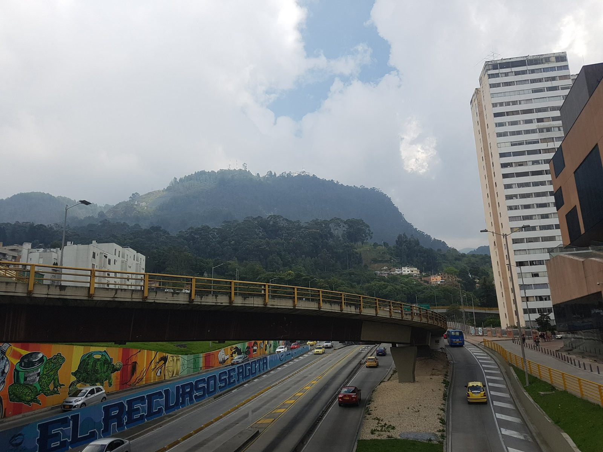
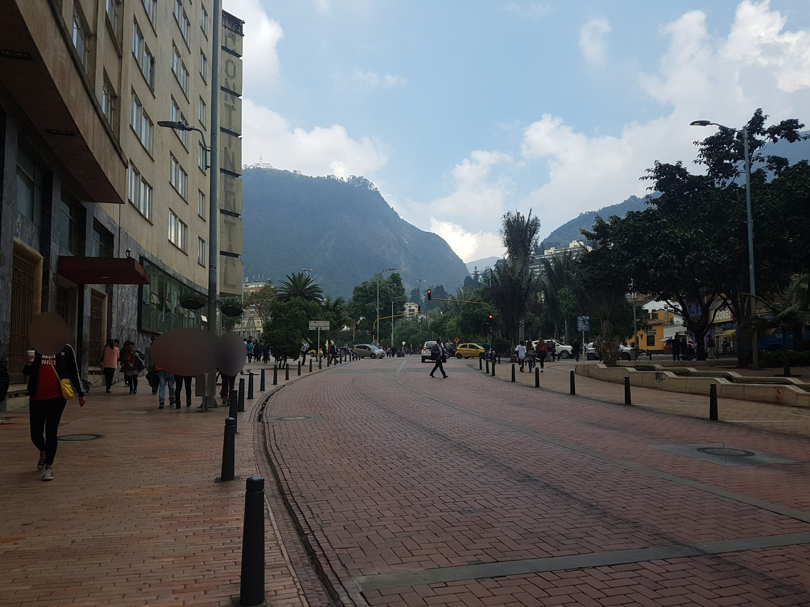
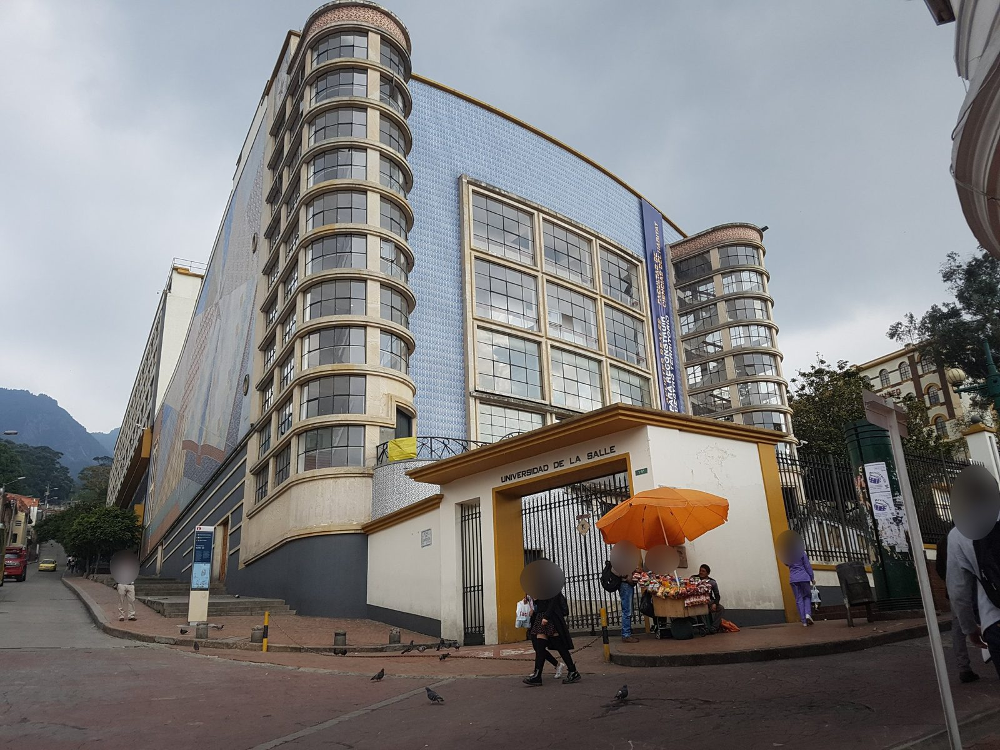

South America · Colombia · Bogotá
Bogotá, November 2017
I flew from Buenos Aires to Colombia and spent about six days in Bogotá, from about Friday, November 17, until the 22nd or 23rd. I slept in one hostel the whole time, El Pit Hostel, a nice hostel. I spent my birthday here, alone, at a Hard Rock Cafe where the staff made it a party.
My conclusion up front: I took very few photos in Bogotá, and what I have is a hostel visit, a birthday meal and three walks around the centre. There are two days, the 19th and the 21st, with no photos at all, and I do not remember what I did on them. If you want a full guide to the city, this is not it.
The times are my phone's clock, and Google Photos stores them in Colombian time (GMT-5). The boxes hold research I did in November 2026, each with a source and a date, so you can tell it apart from what I remember.
The hostel
I slept at El Pit Hostel for the whole stay. I do not have a photo of the room or the lobby, and I do not remember what I paid or how many nights it was in total. The listing I found gives its address as Carrera 5 No. 26c-82, in the Santa Fe neighbourhood.
On my first night, Friday, November 17, at 21:56, I took a selfie with a white dog in the hostel Casa De Ari, in La Candelaria. I did not sleep there. I came to visit. The dog is a female, and her name is Hani. I do not remember who I went to see or who else was there. Google Photos pins the picture in the middle of La Candelaria, close to the Plaza de Bolívar, with no place name, so the name of the hostel comes from me, not from the pin.

El Pit Hostel: the Kayak listing gives the address as Carrera 5 No. 26c-82, Santa Fe, Bogotá, and shows prices through the site (Kayak). It carries no closure note, but I could not confirm that it is open today or what a bed costs.
Casa De Ari: a hotels.com listing gives the address as Calle 10 No. 2-46, La Candelaria. It describes a hostel with 30 rooms, a restaurant, a bar and a cafe, a 24-hour front desk, a minimum age of 18 and no wheelchair access (hotels.com).
What I did not find: 2017 prices, and whether either hostel is the same as it was nine years ago. Check a recent review before you book.
My birthday
On Saturday, November 18, my birthday, I ate alone at the Hard Rock Cafe in Bogotá. The restaurant's menu card, the napkin and the bowl in my photos all carry the name. The staff knew that it was my birthday. They sang and celebrated with me, and they gave me a scoop of chocolate ice cream as a gift, on top of what I had ordered. I do not remember what I ordered.
I took the photos between 16:24 and 16:28. In the first one I sit at my table, and behind me three staff members stand around a conga drum on a chair. I blurred their faces. The second is the ice cream, in a white bowl with a blue rim.


What I found: the restaurant was in the Atlantis Plaza mall, in the Zona Rosa, and had operated there since October 1, 2001. On June 2, 2020, Semana reported that it would close on June 30, 2020, when its ten-year franchise ended, because renewing it was not viable during the pandemic (Semana). La República gave the same date and said that it had operated for about 20 years (La República).
A conflict I could not resolve: a post on the chain's own blog says the cafe closed its doors on November 16, 2021 (Hard Rock blog). All three sources say it is closed, and they differ on the date.
What I did not find: an exact street address, and a restaurant that replaced it. Do not plan a visit around it.
November 20: the centre
On Monday, November 20, I took three photos in the afternoon. I do not remember what else I did that day. The first, at 15:24, is a view from a road, with a red city bus on the left, a row of tall apartment buildings and a dark green mountain under heavy cloud. The green sign on the road reads Avenida Circunvalar and Carrera 5. El Pit's listed address is on Carrera 5, so I was probably not far from the hostel, but I cannot say for sure.

At 15:44 I was in the Plaza de Bolívar. Google Photos pins the picture there, and it shows a wet cobbled square full of pigeons, an ice cream seller in a red outfit, and a long yellow building across the square. It looks like the Palacio Liévano, which is the city hall. I do not remember what else I did there. At 15:45 I took a photo of a street going out of the square, between a stone building with iron-barred windows and an orange church with a clock tower, with dark cloud over the mountain at the end. I blurred the faces of the people in both.


What I found: the Palacio Liévano, designed by the French architect Gastón Lelarge and finished in 1907, has housed the city hall since 1974 (Wikipedia).
What I did not check: that the yellow building in my photo is that palace. I read it from the picture alone. I also did not research what stands in the other photo of the street.
November 22: the centre again
On Wednesday, November 22, I took three photos in the afternoon, all in the centre. At 14:14 I stood on a footbridge over a road, in front of a mural with frogs, a turtle and large blue letters that read El recurso se agota, which means the resource runs out. Behind it is a green hill with a white building and antennas on the top. It looks like the Monserrate hill, but I did not take a photo from the top, and I do not remember if I went up.

At 14:28 I took a photo of a brick-paved street with a mountain at the end and a hotel on the left whose vertical sign reads Continental. At 14:58, I photographed the gate of the Universidad de La Salle, a white arch with a yellow frame and a snack seller under an orange umbrella, in front of a tall building with round towers, a blue tiled face and a mosaic on its side. I blurred the faces of people in both.


Monserrate: the city's own page for Holy Week 2026, published on March 30, 2026 and updated the next day, says that the walking path was open for going up from 05:00 to 13:00, and for coming down until 16:00. The funicular and the cable car ran Monday to Saturday from 06:30 to 22:00, and Sundays and holidays closed earlier, at 17:00. After 16:00 you may not walk down. The Pico del Águila path was closed as a precaution because of the risk of falling material, and children under one metre could not go in (Bogotá city, March 2026). Those are the hours for April 2–5, 2026, and the usual ones may differ.
La Salle: the university's Candelaria campus has a large theatre building by the German architect Herbert Rauprich Jung, conceived in 1947. Its north and south faces carry mosaics by Enrique Izquierdo, described as the largest in Colombia, and the building is being remodelled as a university venue (La Salle, August 11, 2025).
What I did not confirm: that the building in my photo is that theatre. The mosaic on its side fits the description, but the article does not say which building appears in my photo, and I did not research the Continental hotel.
Leaving Bogotá
I have photos from Thursday, November 23, at 17:26, at a bay with fishing boats near Santa Marta, on the Caribbean coast, so I left Bogotá on the 22nd or on the 23rd. I do not remember how I travelled or what it cost, and I did not research it. The next chapter starts there.
What I do not remember
I do not remember what I paid for the hostel or how many nights I stayed, who I went to see at Casa De Ari, what I ordered at the Hard Rock Cafe, what I did on November 19, 21 and in the mornings of the other days, and how I left Bogotá. I would rather leave these empty than make them up.